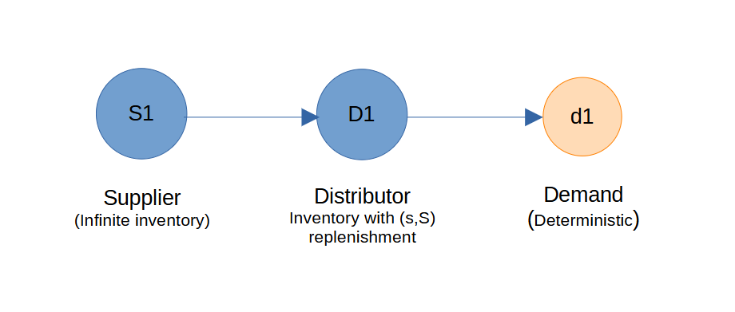

SupplyNetPy in 10 Minutes
Installation
SupplyNetPy can be installed using pip:
pip install supplynetpy
Quick Start: Building a Simple Three-Node Supply Chain
Follow these steps to create and simulate a basic supply chain with a supplier and a manufacturer:

Import the Library
import SupplyNetPy.Components as scm
The Components module in SupplyNetPy offers essential building blocks for constructing supply chain networks. It enables us to define supply chain nodes, products, inventory, demand, and the links that connect them. We can easily assemble and customize supply chain models using these constructs to suit particular requirements.
Create Nodes
Let us create a supplier node in the supply chain that has infinite inventory and can supply any required quantity of product units to a consumer node. The supplier node requires several parameters, including ID, name, and node type. To set it as an infinite supplier, we must specify the node type as infinite_supplier.
supplier1 = {'ID': 'S1', 'name': 'Supplier1', 'node_type': 'infinite_supplier'}
A distributor or warehouse node that purchases products from a supplier is created below by specifying configurable parameters, including ID, name, inventory capacity, replenishment policy, policy parameters, product buy price, and product sell price.
distributor1 = {'ID': 'D1', 'name': 'Distributor1', 'node_type': 'distributor',
'capacity': 150, 'initial_level': 50, 'inventory_holding_cost': 0.2,
'replenishment_policy': scm.SSReplenishment, 'policy_param': {'s':100,'S':150},
'product_buy_price': 100,'product_sell_price': 105}
When creating a manufacturer, distributor, wholesaler, or retailer, we must specify the inventory replenishment policy and its parameters.
The SupplyNetPy Components module includes an InventoryReplenishment class that can be customized to define specific replenishment policies. Currently, SupplyNetPy supports the following replenishment policies:
-
Reorder-level (s,S) — continuously monitor inventory and replenish up to S when the level drops below s. Parameters: {s, S} (class
SSReplenishment) -
Reorder-level (s,S) with Safety Stock — reorder-level replenishment that factors in a safety stock buffer. Parameters: {s, S, safety_stock} (
SSReplenishment) -
Replenish Quantity (RQ) — reorder a fixed quantity Q when placing an order. Parameters: {R, Q} (
RQReplenishment) -
Replenish Quantity (RQ) with safety stock — reorder a fixed quantity Q when placing an order. Parameters: {R, Q, safety_stock} (
RQReplenishment) -
Periodic (T,Q) — replenish inventory every T days with Q units. Parameters: {T, Q} (
PeriodicReplenishment) -
Periodic (T,Q) with safety stock — replenish inventory every T days with Q units. If safety stock is specified, then when the safety stock level is violated, order Q units in addition to the quantity needed to maintain safety stock levels. Parameters: {T, Q, safety_stock} (
PeriodicReplenishment)
Create a Link
A link is created as described below. It is configured using parameters such as transportation cost and lead time. The lead time parameter accepts a generative function that produces random lead times based on a specified distribution. Users can create this function according to their needs or define a constant lead time using a Python lambda function.
link1 = {'ID': 'L1', 'source': 'S1', 'sink': 'D1', 'cost': 5, 'lead_time': lambda: 2}
Specify Demand
A demand is created by specifying an ID, name, demand node, order arrival time, and order quantity. The order arrival parameter accepts a generator function that produces random arrival times, while the order quantity parameter takes a generator function that produces random quantities. Users can define a function that models these arrivals and quantities or use Python's lambda function to create a deterministic demand, as shown below. A demand can be created at either a distributor node or a retailer. In this example, we have created a steady demand for 10 daily units at distributor D1.
demand1 = {'ID': 'd1', 'name': 'Demand1', 'order_arrival_model': lambda: 1,
'order_quantity_model': lambda: 10, 'demand_node': 'D1'}
Assemble and Simulate the Network
To create and simulate the supply chain, use the create_sc_net function to instantiate the supply chain nodes and assemble them into a network. This function adds metadata to the supply chain, such as the number of nodes, and other relevant information, keeping everything organized. It returns a Python dictionary containing all supply chain components and metadata. The simulate_sc_net function then simulates the supply chain network over a specified period and provides a log of the simulation run. It also calculates performance measures such as net profit, throughput, and more. Let's use these functions to build and simulate our supply chain.
# create a supply chain network
supplychainnet = scm.create_sc_net(nodes=[supplier1, distributor1], links=[link1], demands=[demand1])
# simulate for 20 days
supplychainnet = scm.simulate_sc_net(supplychainnet, sim_time=20, logging=True)
Review Results
After the simulation, inspect supplychainnet to view performance metrics for the supply chain nodes. By default, the simulation log is displayed in the console and saved to a local file named simulation_trace.log, which is located in the same directory as the Python script. Each node in the simulation has its own logger, and logging can be enabled or disabled by providing an additional parameter: logging=True or logging=False while creating the node. SupplyNetPy uses a global logger referred to as global_logger, which allows to show or hide all logs by calling scm.global_logger.enable_logging() or scm.global_logger.disable_logging().
Below is an example of a simulation log generated by this program. At the end of the log, supply chain-level performance metrics are calculated and printed. These performance measures are computed for each node in the supply chain and include:
- Inventory carry cost (holding cost)
- Inventory spend (replenishment cost)
- Transportation cost
- Total cost
- Revenue
- Profit
INFO D1 - 0.0000:D1: Inventory levels:50, on hand:50
INFO D1 - 0.0000:D1:Replenishing inventory from supplier:Supplier1, order placed for 100 units.
INFO D1 - 0.0000:D1:shipment in transit from supplier:Supplier1.
INFO d1 - 0.0000:d1:Customer1:Order quantity:10, available.
INFO D1 - 0.0000:D1: Inventory levels:40, on hand:140
INFO d1 - 1.0000:d1:Customer2:Order quantity:10, available.
INFO D1 - 1.0000:D1: Inventory levels:30, on hand:130
INFO D1 - 2.0000:D1:Inventory replenished. reorder_quantity=100, Inventory levels:130
INFO d1 - 2.0000:d1:Customer3:Order quantity:10, available.
INFO D1 - 2.0000:D1: Inventory levels:120, on hand:120
INFO d1 - 3.0000:d1:Customer4:Order quantity:10, available.
INFO D1 - 3.0000:D1: Inventory levels:110, on hand:110
INFO d1 - 4.0000:d1:Customer5:Order quantity:10, available.
INFO D1 - 4.0000:D1: Inventory levels:100, on hand:100
INFO D1 - 4.0000:D1:Replenishing inventory from supplier:Supplier1, order placed for 50 units.
INFO D1 - 4.0000:D1:shipment in transit from supplier:Supplier1.
INFO d1 - 5.0000:d1:Customer6:Order quantity:10, available.
INFO D1 - 5.0000:D1: Inventory levels:90, on hand:140
INFO D1 - 6.0000:D1:Inventory replenished. reorder_quantity=50, Inventory levels:140
INFO d1 - 6.0000:d1:Customer7:Order quantity:10, available.
INFO D1 - 6.0000:D1: Inventory levels:130, on hand:130
INFO d1 - 7.0000:d1:Customer8:Order quantity:10, available.
INFO D1 - 7.0000:D1: Inventory levels:120, on hand:120
INFO d1 - 8.0000:d1:Customer9:Order quantity:10, available.
INFO D1 - 8.0000:D1: Inventory levels:110, on hand:110
INFO d1 - 9.0000:d1:Customer10:Order quantity:10, available.
INFO D1 - 9.0000:D1: Inventory levels:100, on hand:100
INFO D1 - 9.0000:D1:Replenishing inventory from supplier:Supplier1, order placed for 50 units.
INFO D1 - 9.0000:D1:shipment in transit from supplier:Supplier1.
INFO d1 - 10.0000:d1:Customer11:Order quantity:10, available.
INFO D1 - 10.0000:D1: Inventory levels:90, on hand:140
INFO D1 - 11.0000:D1:Inventory replenished. reorder_quantity=50, Inventory levels:140
INFO d1 - 11.0000:d1:Customer12:Order quantity:10, available.
INFO D1 - 11.0000:D1: Inventory levels:130, on hand:130
INFO d1 - 12.0000:d1:Customer13:Order quantity:10, available.
INFO D1 - 12.0000:D1: Inventory levels:120, on hand:120
INFO d1 - 13.0000:d1:Customer14:Order quantity:10, available.
INFO D1 - 13.0000:D1: Inventory levels:110, on hand:110
INFO d1 - 14.0000:d1:Customer15:Order quantity:10, available.
INFO D1 - 14.0000:D1: Inventory levels:100, on hand:100
INFO D1 - 14.0000:D1:Replenishing inventory from supplier:Supplier1, order placed for 50 units.
INFO D1 - 14.0000:D1:shipment in transit from supplier:Supplier1.
INFO d1 - 15.0000:d1:Customer16:Order quantity:10, available.
INFO D1 - 15.0000:D1: Inventory levels:90, on hand:140
INFO D1 - 16.0000:D1:Inventory replenished. reorder_quantity=50, Inventory levels:140
INFO d1 - 16.0000:d1:Customer17:Order quantity:10, available.
INFO D1 - 16.0000:D1: Inventory levels:130, on hand:130
INFO d1 - 17.0000:d1:Customer18:Order quantity:10, available.
INFO D1 - 17.0000:D1: Inventory levels:120, on hand:120
INFO d1 - 18.0000:d1:Customer19:Order quantity:10, available.
INFO D1 - 18.0000:D1: Inventory levels:110, on hand:110
INFO d1 - 19.0000:d1:Customer20:Order quantity:10, available.
INFO D1 - 19.0000:D1: Inventory levels:100, on hand:100
INFO D1 - 19.0000:D1:Replenishing inventory from supplier:Supplier1, order placed for 50 units.
INFO D1 - 19.0000:D1:shipment in transit from supplier:Supplier1.
INFO sim_trace - Supply chain info:
INFO sim_trace - available_inv : 100
INFO sim_trace - avg_available_inv : 112.5
INFO sim_trace - avg_cost_per_item : 50.87
INFO sim_trace - avg_cost_per_order : 1017.4
INFO sim_trace - backorders : [0, 0]
INFO sim_trace - demand_by_customers : [20, 200]
INFO sim_trace - demand_by_site : [5, 300]
INFO sim_trace - demands : {'d1': Demand1}
INFO sim_trace - env : <simpy.core.Environment object at 0x0000028D55F67C10>
INFO sim_trace - fulfillment_received_by_customers : [20, 200]
INFO sim_trace - fulfillment_received_by_site : [4, 250]
INFO sim_trace - inventory_carry_cost : 410.0
INFO sim_trace - inventory_spend_cost : 25000
INFO sim_trace - inventory_waste : 0
INFO sim_trace - links : {'L1': S1 to D1}
INFO sim_trace - nodes : {'S1': Supplier1, 'D1': Distributor1}
INFO sim_trace - num_distributors : 1
INFO sim_trace - num_manufacturers : 0
INFO sim_trace - num_of_links : 1
INFO sim_trace - num_of_nodes : 2
INFO sim_trace - num_retailers : 0
INFO sim_trace - num_suppliers : 1
INFO sim_trace - profit : -4435.0
INFO sim_trace - revenue : 21000
INFO sim_trace - shortage : [0, 0]
INFO sim_trace - total_cost : 25435.0
INFO sim_trace - total_demand : [25, 500]
INFO sim_trace - total_fulfillment_received : [24, 450]
INFO sim_trace - transportation_cost : 25
To access node performance metrics easily, call node.stats.get_statistics(). In this example, the D1 node level statistics can be accessed with the following code:
D1_node = supplychainnet["nodes"]["D1"] # Get D1 node
stats = D1_node.stats.get_statistics() # Get D1_node statistics
print(stats) # print
Here is the output produced by the code mentioned above.
{'demand_placed': [5, 300],
'fulfillment_received': [4, 250],
'demand_received': [20, 200],
'demand_fulfilled': [20, 200],
'orders_shortage': [0, 0],
'backorder': [0, 0],
'inventory_level': 100,
'inventory_waste': 0,
'inventory_carry_cost': 410.0,
'inventory_spend_cost': 25000,
'transportation_cost': 25,
'node_cost': 25435.0,
'revenue': 21000,
'profit': -4435.0}
Alternative Approach: Using Object-Oriented API
This approach demonstrates how to build and simulate a supply chain using SupplyNetPy's object-oriented API. Instead of passing dictionaries to utility functions, we instantiate supply chain components as Python objects, providing greater flexibility and extensibility. Each node and link is created as an object, and the simulation is managed within a SimPy environment, allowing for more advanced customization and integration with other SimPy-based processes.
import simpy # importing simpy to create a simpy environment
env = simpy.Environment() # create a simpy environment
# create an infinite supplier
supplier1 = scm.Supplier(env=env, ID='S1', name='Supplier', node_type="infinite_supplier")
# create a distributor node
distributor1 = scm.InventoryNode(env=env, ID='D1', name='Distributor1', node_type='distributor',
capacity=150, initial_level=50, inventory_holding_cost=0.2,
replenishment_policy=scm.SSReplenishment,
policy_param={'s':100, 'S':150}, product_buy_price=100,
product_sell_price=105)
# create a link for distributor
link1 = scm.Link(env=env, ID='L1', source=supplier1, sink=distributor1, cost=5, lead_time=lambda: 2)
# create demand at distributor1
demand1 = scm.Demand(env=env, ID='d1', name='Demand1', order_arrival_model=lambda: 1,
order_quantity_model=lambda:10, demand_node=distributor1)
# we can simulate the supply chain
env.run(until=20)
This script generates an identical simulation log because the network configuration and demand are deterministic. Final statistics will not be included in the log, as overall supply chain statistics are calculated by the function simulate_sc_net. However, node-level statistics will still be available and can be accessed as mentioned earlier. We can proceed to create and simulate the supply chain network using the same functions, create_sc_net and simulate_sc_net, as demonstrated below.
# create a supply chain network
supplychainnet = scm.create_sc_net(env=env, nodes=[supplier1, distributor1],
links=[link1], demands=[demand1])
# simulate
supplychainnet = scm.simulate_sc_net(supplychainnet, sim_time=20, logging=True)
Note that an additional parameter, env, is passed to the function create_sc_net to create a supply chain network. This is necessary because the SimPy environment (env) is now created by us and the same needs to be used for creating the supply chain network and running the simulations.